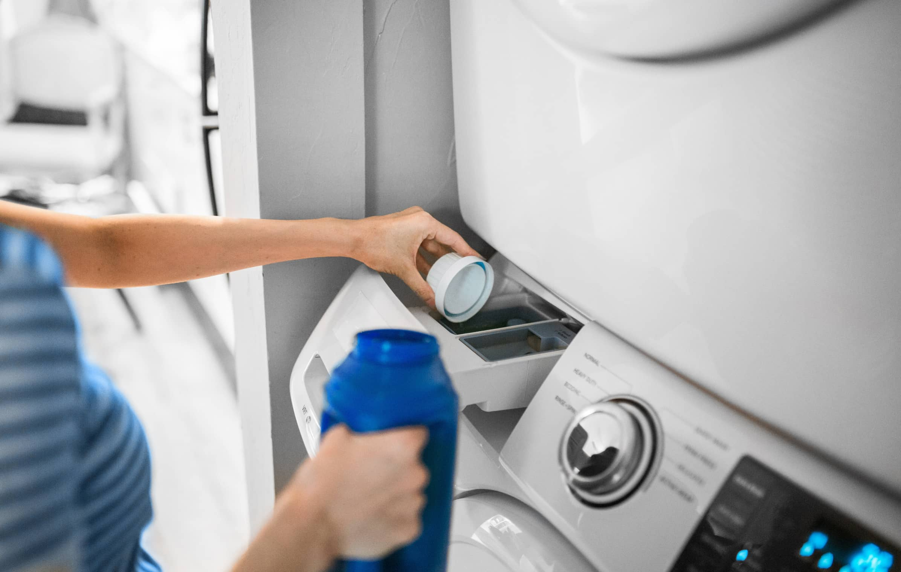

One of the most common laundry questions is: how often should I actually wash my clothes? The answer varies depending on the garment type, how it was worn, and environmental conditions. Washing too frequently can damage fabrics and waste water, while washing too rarely causes odour, bacteria buildup, and hygiene issues. Here is a practical guide to help you find the right balance.
Everyday Basics: Wash After Each Wear
Certain items that come into direct contact with your skin or areas prone to sweat should always be washed after a single use.
- Underwear and socks — direct skin contact makes these the highest hygiene priority
- T-shirts and vests worn against the skin in hot, humid weather
- Workout and gym clothes — sweat, bacteria, and odour build up rapidly
- Anything visibly soiled or stained, regardless of how long it was worn
In Nigeria's hot and humid climate, especially during the rainy season, most inner garments should be washed after every single use due to the high rate of perspiration.

Casual Wear: Every 2–3 Wears
Items worn over other clothing or not in direct contact with heavy-sweat areas can generally be washed every two to three wears. This includes casual shirts, blouses, jeans, lightweight jackets, and casual dresses.
Between washes, air these garments out by hanging them in a well-ventilated area. This removes light odours and allows moisture to evaporate naturally, extending the time between washes.
Formal & Office Wear: Every 3–5 Wears
Formal clothing — suits, blazers, dress trousers, and formal skirts — should not be washed after every wear. Frequent washing degrades the structure and fabric quality faster. Spot-clean where necessary and use garment care between wears.
Suits & Blazers
Dry clean 3–4 times per year. Air between wears and spot clean minor marks immediately.
Dress Shirts
Wash after 1–2 wears depending on sweat levels. Collar and cuff areas attract the most soil.
Formal Trousers
Wash every 4–5 wears or when visibly dirty. Hang properly after wearing to maintain shape.
Traditional Attire
Agbada, aso-oke, and similar pieces should be dry cleaned to protect colour and texture.
Bedding & Towels: Weekly or Fortnightly
Sheets and pillowcases accumulate dead skin cells, sweat, and dust mites quickly. In Nigeria's warm climate, washing bedding weekly is recommended. Towels should be washed every three to four uses and hung fully open to dry completely between uses.
Dirty bedding and damp towels are common breeding grounds for bacteria and fungi. In hot climates, washing these frequently protects against skin irritation and infections.
Factors That Affect Wash Frequency
- Physical activity — exercise or outdoor work increases sweat and soiling
- Climate — hot, humid conditions require more frequent washing
- Skin type — people with sensitive or acne-prone skin may need to wash items more often
- Cooking or work environment — those who cook regularly or work in dusty conditions should wash more often
- Children's clothing — always wash after each wear due to food, dirt, and high activity levels
Quick Reference Wash Guide
| Item | Recommended Frequency | Notes |
|---|---|---|
| Underwear & Socks | After every wear | Non-negotiable for hygiene |
| T-shirts (next to skin) | After every wear | More often in hot weather |
| Jeans | Every 3–5 wears | Turn inside out to preserve colour |
| Dress shirts | Every 1–2 wears | Focus on collar and cuffs |
| Suits & blazers | Every 5–6 wears | Dry clean only |
| Gym clothes | After every wear | Never leave damp in a bag |
| Bed sheets | Weekly | Fortnightly minimum |
| Towels | Every 3–4 uses | Hang fully open between uses |
| Ankara / Traditional | Every 2–3 wears | Hand wash or dry clean |